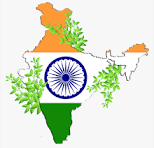
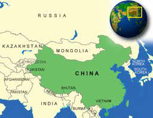
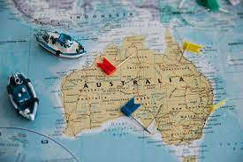

Some Explore Ideas to see!
Travel can be done by foot, bicycle, automobile, train, boat, bus, airplane, ship or other means, with or without luggage, and can be one way or round trip. Travel can also include relatively short stays between successive movements, as in the case of tourism.
1.INDIA

Regarding web development outsourcing, India is one of the most popular choices. India is a large country with over 1.3 billion people, many of whom are highly skilled and experienced software developers. The cost of hiring web developers in India is much lower than in other countries, making it an attractive option for businesses looking to keep their costs down. Additionally, Indian developers are well-versed in modern technologies such as Blockchain, AR/VR, AI, IoT, and more.
Moreover, many established and experienced web development companies in India have been developing successful web applications for years. Many of these companies also offer offshore web development services, meaning they can do the entire development process remotely. This makes India great for businesses looking for quality yet affordable web development services.
2.CHINA

Vietnam is quickly becoming a popular choice. The country offers high-quality work at an affordable price, making it an excellent option for those looking to outsource their web development project.
Vietnamese web developers strongly understand coding languages like HTML, CSS, JavaScript, and PHP. They also have experience developing dynamic websites, eCommerce websites, custom CMSs, and more.
In addition to their technical expertise, Vietnamese web developers also have strong communication skills. This makes them great candidates for working with remote teams and clients, allowing for smoother communication and better results.
In terms of cost, Vietnam is competitively priced compared to other countries. Projects can be completed for a fraction of what they would cost in the US or Europe, making it an attractive option for those looking to save money.
If you’re looking for a reliable and cost-effective web development partner, you should consider outsourcing to Vietnam. You’ll get access to experienced developers who can create high-quality work at an affordable rate.
3.AMERICA
A developed country, the United States has the highest median income per capita of any non-microstate and possesses by far the largest amount of wealth of any country.
The American economy accounts for over a quarter of global GDP and is the largest nominally. It ranks among the highest in the world in international measures of human development, income, wealth, economic competitiveness, productivity, innovation, human rights, and education.
The United States is a founding member of the United Nations, the World Bank, the International Monetary Fund, the Organization of American States, NATO and WHO and is a permanent member of the United Nations Security Council. It wields considerable global influence as the world's foremost political, cultural, economic, military, and scientific power.
4.AUSTRALIA
